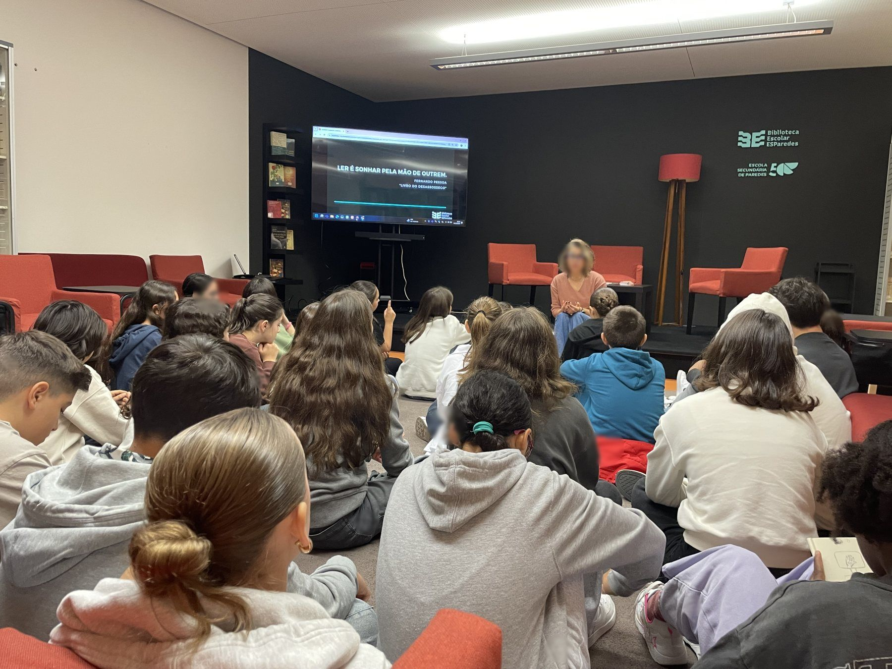

Apoio ao estudo
001.8aprender
Em que te podemos ajudar hoje?
Diz-nos o objetivo e mostramos-te o caminho todo, passo a passo, com os recursos de cada etapa.
Hoje quero…
Escolhe um objetivo. O percurso abre aqui, com os recursos certos em cada passo.
A Biblioteca explica
As dúvidas que nos chegam mais vezes, respondidas em poucas linhas. Abre a que te interessa.
Guias e referenciais
Os guias oficiais em que a Biblioteca se apoia.
Aprender por disciplina
Recursos escolhidos com os professores. Escolhe a disciplina.
Literacia digital
Seis competências, por esta ordem, segundo o referencial da RBE.
Trabalhar com a Biblioteca
Para docentes. Seis pedidos que a Biblioteca aceita, cada um com o que é preciso e com que antecedência. Os procedimentos são os do Manual da Biblioteca, e o código que aparece em cada um é onde estão escritos por inteiro.
Onde ir buscar
Sítios validados pela Biblioteca, de acesso livre. Abrem em separador novo.
Não encontraste o que precisavas?
A equipa ajuda-te a definir o tema, a encontrar as fontes e a citar como deve ser.